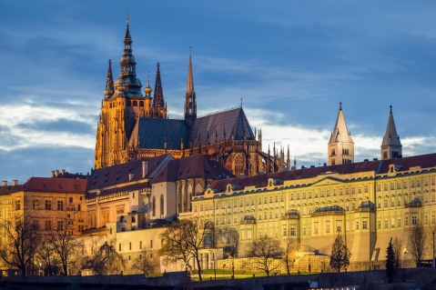

The majestic Prague Castle, a symbol of Czech heritage and pride.
Prague Castle, a symbol of Czech heritage and pride, is one of the largest and most historically significant castles in the world. Its origins date back to the 9th century, and over the centuries, it has served as the seat of Czech kings, Holy Roman emperors, and modern-day presidents. The castle complex reflects various architectural styles, from Romanesque to Gothic and Baroque, showcasing the rich cultural and historical evolution of the region. Recognized as a UNESCO World Heritage site, it remains a must-see for visitors from around the globe.
Key Attractions within the Castle Complex
St. Vitus Cathedral:
A stunning Gothic masterpiece and the spiritual heart of Prague Castle. The cathedral houses the tombs of Bohemian kings and the magnificent St. Wenceslas Chapel.
Old Royal Palace:
A historic building that served as the residence of Czech rulers. Visitors can explore the Vladislav Hall, a grand ceremonial space used for medieval jousting tournaments and royal coronations.
Golden Lane:
A charming street lined with colorful, tiny houses that once housed castle guards, artisans, and even the famous writer Franz Kafka. It’s a glimpse into life at the castle during different eras.
Castle Gardens:
A tranquil escape offering breathtaking views of Prague. The gardens include the Royal Garden, dating back to the 16th century, and the Southern Gardens, which overlook the city.
Visitor Information
Type
Details
Opening Hours
Summer: 6:00 AM - 10:00 PM (April - October)
Winter: 6:00 AM - 9:00 PM (November - March)
Ticket Prices
Adults: 250 CZK, Students: 125 CZK
Guided Tours
Available in multiple languages
Don't forget to catch the ceremonial Changing of the Guard, which takes place daily at noon in the first courtyard.
Fun Facts
The Guinness World Records lists Prague Castle as the largest ancient castle in the world, covering an area of nearly 70,000 square meters.
St. Vitus Cathedral’s construction took nearly 600 years to complete.
The Bohemian Crown Jewels are stored in a hidden chamber within the castle, accessible only by seven keys held by different officials.